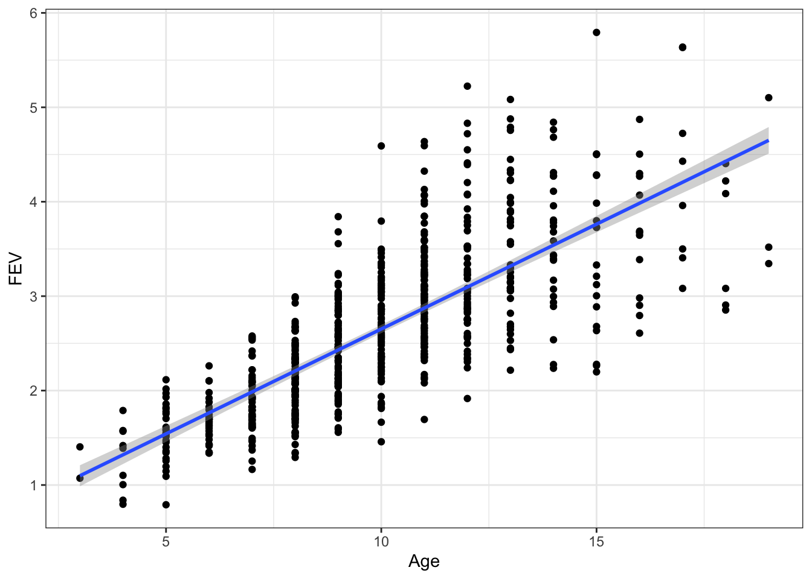
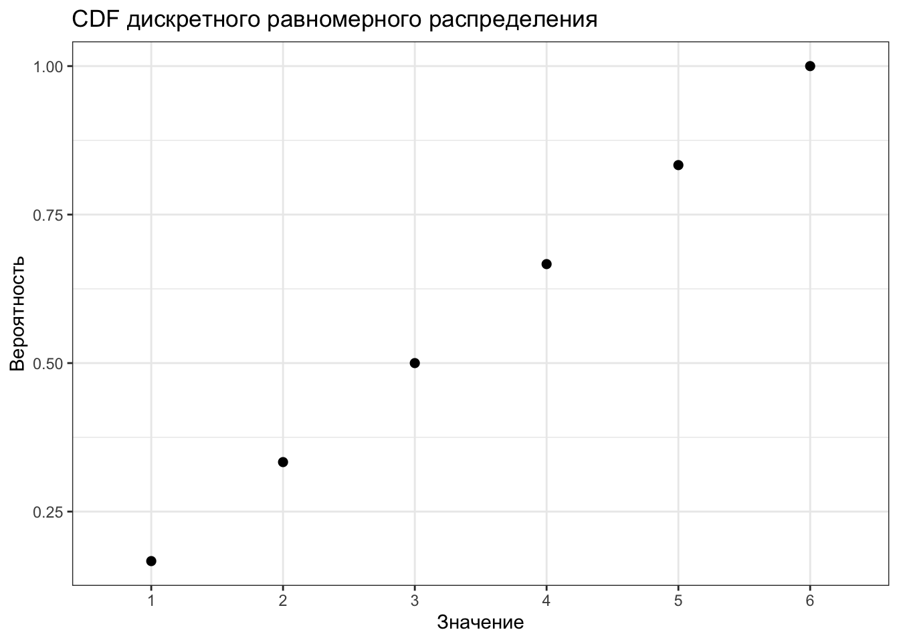
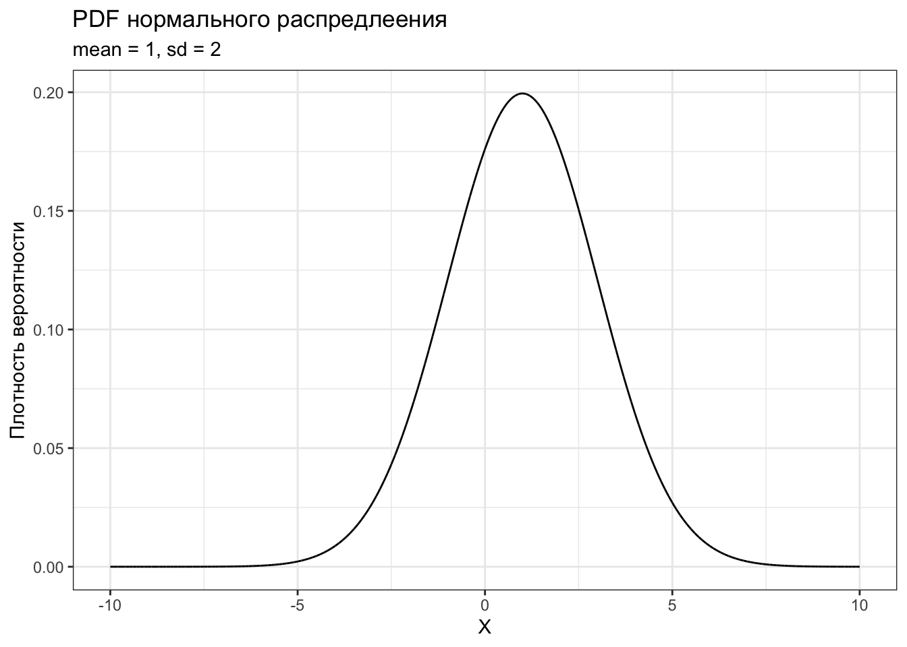
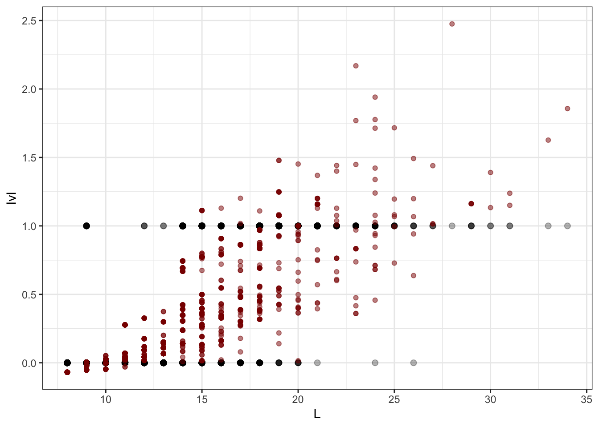

12 Вероятность и случайные величины
Возвращаемся к тому, что мы получаем циферки в результате измерений в ходе нашего исследования.
Мы измеряет определённые характеристики нашей выборки, которую мы извлекли из генеральной совокупности, то есть приписываем им некоторые значения на определённой шкале. В итоге мы получаем описание интересующей нас характеристики через случайную величину.
Случайная величина — это величина, которая принимает любое из своих возможных значений с определенной вероятностью.
Вернемся на пару минут к кубику. У нас есть пространство элементарных событий, которое содержит шесть элементов. Каждой элементу мы ставим с соответствие число, находящееся на грани кубика. Итого, получаем, что у нашей случайной величины есть всего 6 значений, которые она может принимать с вероятностью \(\frac{1}{6}\). Мы даже можем построить соответствующий график:

Мы с вами познакомились с частным примером дискретной случайной величины.
12.1 Дискретные случайные величины
С ними всё просто. Есть множество значений, которые эта случайная величина может принимать. Есть вероятности, с которыми она каждое из них принимает. Самый простой способ описания дискретной случайной величины — табличный:
| \(x_i\) | 1 | 2 | 3 | 4 | 5 |
|---|---|---|---|---|---|
| \(\mathrm{P}_i\) | \(\frac{1}{6}\) | \(\frac{1}{6}\) | \(\frac{1}{6}\) | \(\frac{1}{6}\) | \(\frac{1}{6}\) |
Это табличное задание для функции вероятности (probablity mass function, PMF) для дискретного равномерного распределения. Собственно, функция вероятности описывает, с какой вероятность даная случайная величина принимает каждое из своих значений.
Другая функция, которая тоже описывается распредление, называется функцией распредления (cumulative distribution function, CDF).
 Она показывает, какова вероятность, что случайная величина пример данное или меньшее значение.
12.2 Непрерывные случайные величины
Всё легко и приятно до тех пор, пока мы не сталкивается с непрерывными слуайными величинами. Хотя в ними мы как раз и работаем практически всегда. Что с ними не так?
Основная их фича в том, что их множество значений бесконечно. Представим, что мы замеряем время реакции. Пусть у нас экспериментально есть ограничений, и диапазон времени реакции у нас от 0 мс до 10000 мс. Вроде границы есть, но внутри них переменная «время реакции» может принимать абсолютно любое значение, так как между 0 и 10000 бесконечное множестве чисел1.
Если мы попробуем применить классический подход к вероятности для вычислений, то получим следующее. Внимательно взглянем на формулу:
\[ \mathrm{P}(A) = \frac{m}{n} \] Так как число возможных исходов \(n\) у нас бесконечно, то
\[ \mathrm{P}(A) = \frac{m}{\infty} \]
Выглядит уже дико, но это ещё можно попробовать подсчитать. Через предел:
\[ \mathrm{P}(A) = \lim_{n \rightarrow \infty} \frac{m}{n} = 0 \]
Короче, здесь мы не приуспели. Зато выяснили, что вероятность того, что непрерывная случайная величина примет конкретное значение равна нулю.
Что же делать? Давайте посмотрим не на конкретные значения, а на какие-нибудь отрезки нашей переменной. Вероятность того, что значение нашей случайной величины окажется в некотором интервале уже не будет равно нулю, и его можно подсчитать.
Чтобы с непрерывными случайными величинами можно было оперировать аналогично тому, как это происходит с дискретными, вводится понятие плотность вероятности.
Плотность вероятности — это предел отношения вероятности попадания значения случайной величины в определенный отрезок к длине этого отрезка при очень малой длине этого отрезка.
\[ f(x) = \lim_{\Delta x \rightarrow 0} \frac{\mathrm{P}(x < X < x + \Delta x)}{\Delta x} \]
В итоге после всего математического колдунства получается функция плотности распределения (probability density function, PDF). Почти как PMF, только непрерывная.
x <- seq(-10, 10, .001)
tibble(y = dnorm(x, mean = 1, sd = 2)) %>%
ggplot(aes(x = x, y = y)) +
geom_line() +
xlab('X') + ylab('Плотность вероятности') +
labs(title = "PDF нормального распредлеения",
subtitle = "mean = 1, sd = 2")
Есть и функция распределения (cumulative distribution function, CDF) для непрерывных величин:
x <- seq(-10, 10, .001)
tibble(y = pnorm(x, mean = 1, sd = 2)) %>%
ggplot(aes(x = x, y = y)) +
geom_line() +
xlab('X') + ylab('Вероятность') +
labs(title = "CDF нормального распредлеения",
subtitle = "mean = 1, sd = 2")
12.3 Характеристики распределения случайных величин
12.4 Нормальное распределение
Вспомним, что мы находимся на вещественной прямой, где работает аксиома полноты, а следовательно, нет «дырок».↩